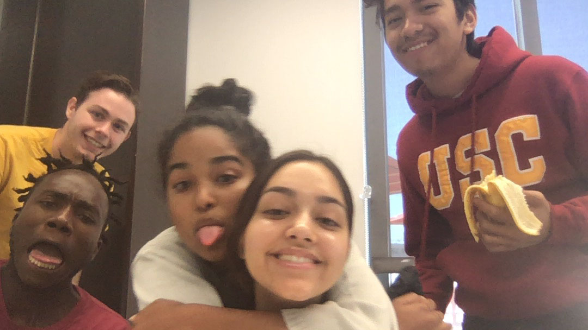

Our journey from November through April has taught us a lot. Here is a sneak peak behind the scenes of our process of developing our platform. While working hard, we always find time to have fun!

The team together having a great time. It is important to us to find time for fun while working. We are all great friends with eachother.